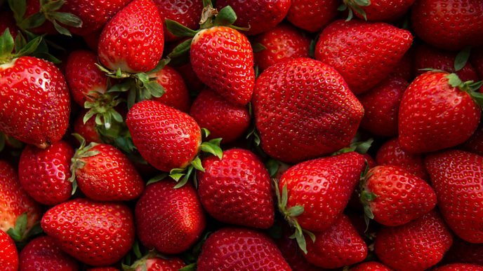

Are strawberries good for you?
There are lots of claims made about the health benefits of strawberries,, including:"If you stand in a field of strawberries, it will boost your mood'.So what's fact and fiction?

"Fresh oranges contain about 52mg/100g Vitamin C and strawberries contain 57mg/100g," says nutritionist DrEmma
Derbyshire, before adding:"Strawberries are a good provider of antioxidants... Vitamin C is an antioxidant and the
polyphenols in strawberries which give them their red colour are also regarded to have antioxidant properties."
"Polyphenols lower oxidative stress levels which have been linked to conditions such as cancer, cardiovascular diseases,
Type 2 diabetes, obesity and inflammation," says Derbyshire. So yes, they certainly are good for you.